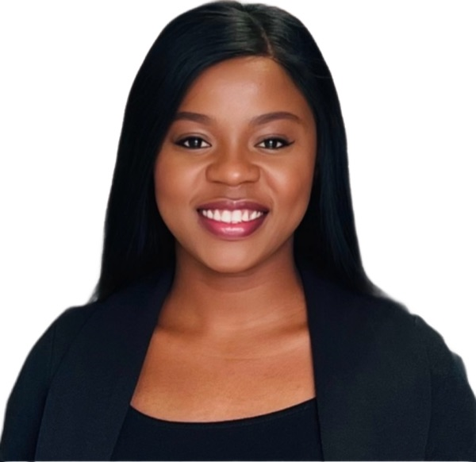
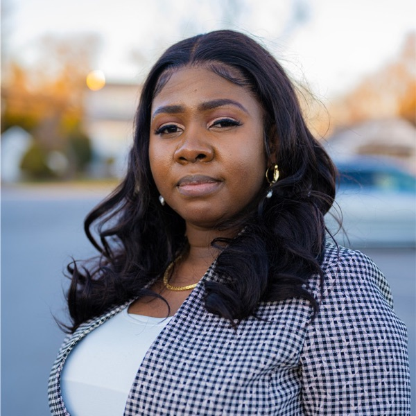

Opeyemi Adeniran
Ph.D. Student, Computer & Electrical Systems Engineering
Morgan State University

Abiola Ajala
Ph.D. Researcher, Electrical & Computer Engineering
Morgan State University
Agentic Software Development - ACT
Day 2 · Sunday, July 26 · 10:25 AM to 12:00 PM · Workshop Room 208
Workshop participants must bring their own laptop.
Abstract
Recent advances in large language models have transformed software engineering by enabling autonomous coding agents capable of reasoning over project context, modifying source code, executing development tasks, debugging applications, and supporting deployment under human supervision. Despite this progress, computing education continues to emphasize prompt engineering and code generation, providing limited opportunities for students to develop the competencies required to effectively collaborate with autonomous coding agents throughout the software development lifecycle. This gap highlights the need for instructional approaches that prepare learners for emerging software development practices.
This workshop introduces participants to Agentic software development through an experiential, project-based learning framework centered on the end-to-end development and deployment of a modern web application. Organized into progressive laboratory modules, the workshop covers project setup, React application development, iterative interface refinement, version control, web deployment, and agent-assisted debugging. Throughout the workshop, participants learn to direct coding agents, evaluate implementation plans, approve or reject proposed modifications, verify generated artifacts, and maintain responsibility for software quality through a human-in-the-loop development process.
By integrating contemporary development tools with project-based learning, participants build and deploy a fully functional web application while developing practical competencies in agent-collaborative software engineering, deployment workflows, and software validation. The workshop provides a scalable instructional framework for integrating agentic software development into computing and engineering education, equipping students, educators, and researchers with the skills needed to work effectively alongside autonomous coding agents in modern software engineering practice.
About the Presenter: Opeyemi Adeniran
Opeyemi Adeniran is a Ph.D. student in the Department of Computer and Electrical Systems Engineering at Morgan State University and an AI Research Assistant in the Data Engineering and Predictive Analytics (DEPA) Lab. Her research focuses on artificial intelligence, computer vision, and explainable multimodal AI, with applications in intelligent surveillance, forensic video analytics, healthcare, and transportation systems. She develops AI-driven solutions that combine computer vision, machine learning, and large multimodal models to solve real-world challenges while improving transparency and reliability. Through her research and teaching, Opeyemi is passionate about making advanced AI practical, accessible, and impactful for industry and society.
About the Presenter: Abiola Ajala
Abiola Olayinka Ajala is a Ph.D. researcher in the Department of Electrical and Computer Engineering at Morgan State University. Her research focuses on artificial intelligence, intelligent agent systems, AI-assisted software engineering, and engineering education, with an emphasis on developing intelligent systems that address real-world challenges. She also contributes to NASA-supported research on AI for climate-resilient airspace management and data-driven decision support. Abiola has authored and co-authored peer-reviewed publications and presented her research at national and international conferences. She is the founder of Herbiestech, an emerging technology company developing AI-powered software, automation systems, and digital solutions for businesses, educational institutions, and nonprofit organizations.